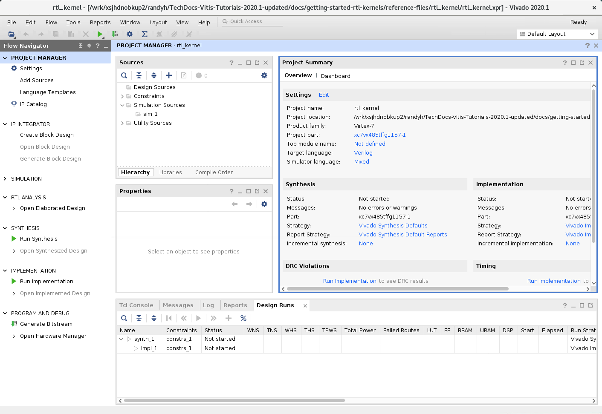
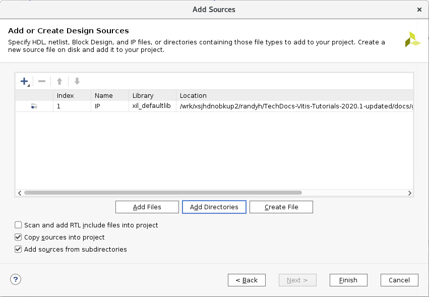
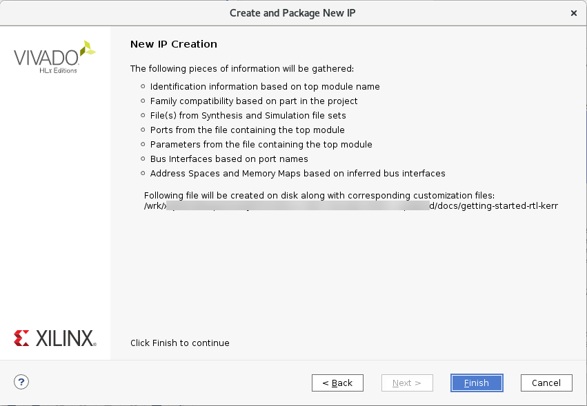
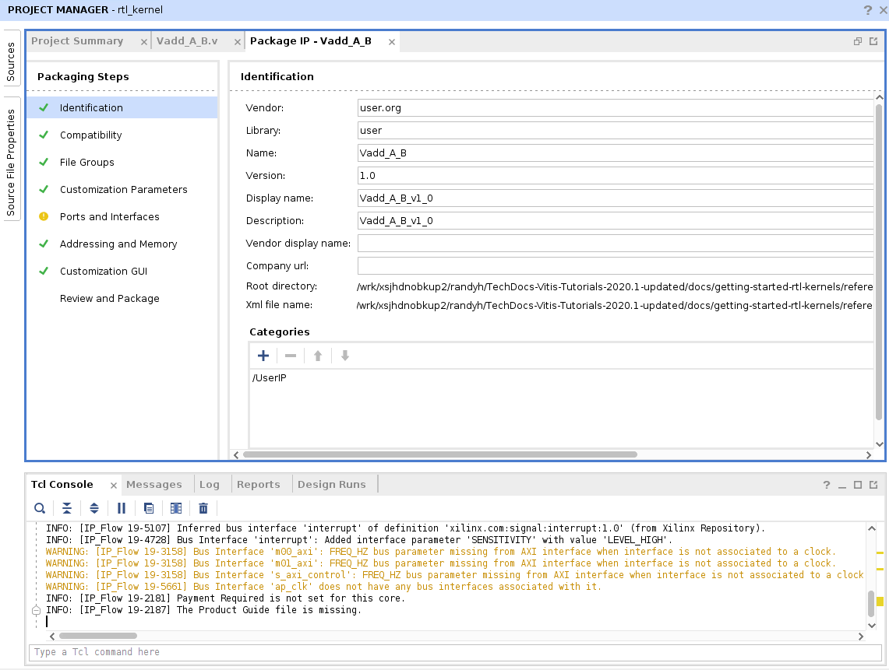
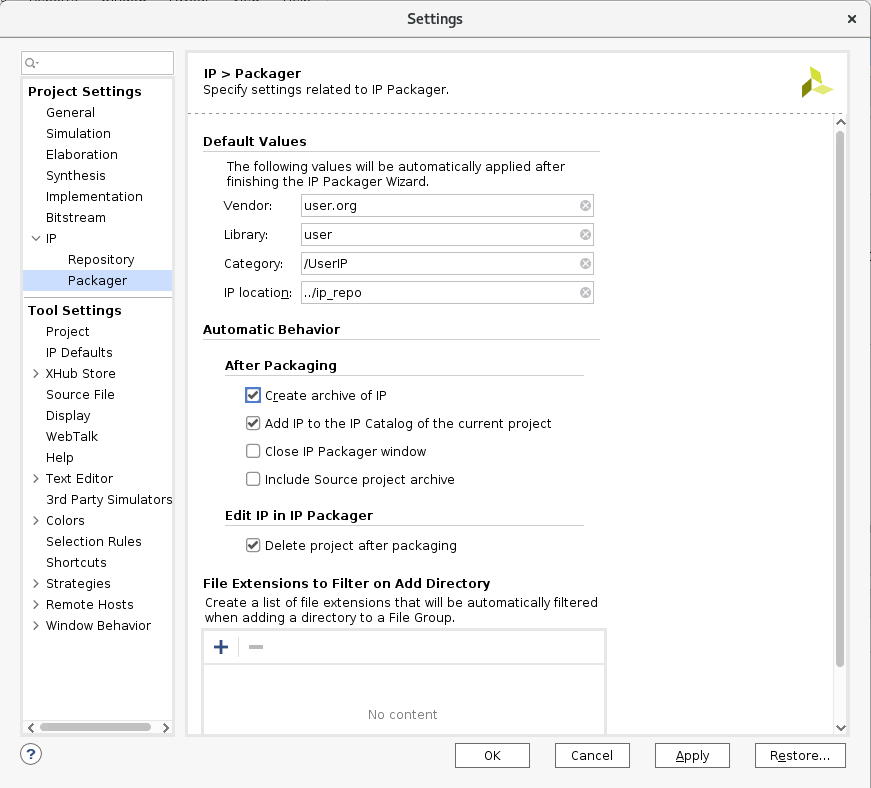

Vitis™ アプリケーション アクセラレーション開発フロー チュートリアル |
IP/XO パッケージ フロー¶
バージョン: Vitis 2021.2
この演習で説明するプロセスは、『Vitis 統合ソフトウェア プラットフォームの資料』 (UG1393) の RTL カーネルの開発フローに説明されている [Package IP] フローに従っています。
重要: チュートリアルのコマンドを実行する前に、Vitis 環境の設定に説明されているように、次のコマンドを実行してツール環境を設定する必要があります。
#setup Xilinx Vitis tools.XILINX_VITIS and XILINX_VIVADO will be set in this step. source <VITIS_install_path>/settings64.sh #Setup Xilinx runtime.XILINX_XRT will be set in this step. source <XRT_install_path>/setup.sh
新規プロジェクトの作成¶
チュートリアル フォルダーに移動します (
cd ./01-rtl_kernel_workflow)。ターミナル ウィンドウに
vivadoコマンドを入力して Vivado® IDE を起動します。[Create Project] をクリックするか、[File] → [Project] → [New] をクリックします。
New Project ウィザードが開きます。
[Next] をクリックします。
New Project ウィザードの [Project Name] ページで、次のように設定します。
[Project name] にプロジェクト名 (
rtl_kernelなど) を入力し、[Project location] でプロジェクト ディレクトリを指定します。[Create Project subdirectory] チェック ボックスをオンにします。
[Next] をクリックします。
[Project Type] ページで、次のように設定します。
[RTL Project] をオンにします。
[Do not specify sources at this time] をオンにします。
[Next] をクリックします。
[Default Part] ページで [Boards] を選択し、[Search] フィールドに「
U200」と入力します。[Alveo U200 Data Center Accelerator Card] を選択し、[Next] をクリックします。
[New Project Summary] ページが表示されます。
プロジェクトの詳細を確認し、[Finish] をクリックしてプロジェクトを作成します。
Vivado IDE に作成した新規プロジェクトが開きます。

カーネル ソースの追加¶
次に、プロジェクトに RTL ファイルを追加し、IP としてパッケージします。このチュートリアルでは RTL ファイルは提供されていますが、実際にはこの時点で独自の RTL コードを挿入します。
[Sources] ウィンドウで [Add Sources] ボタン () をクリックします。Add Sources ウィザードが開きます。
[Add or create design sources] をオンにし、[Next] をクリックします。
[Add Directories] をクリックし、
reference-files/srcのIPディレクトリ (RTL ソースを含む) を選択します。注記: ユーザーの RTL IP を追加するには、それに必要なフォルダーまたはファイルを指定します。

[Copy sources into project] および [Add sources from subdirectories] をオンにします。
[Finish] をクリックします。
ファイルがプロジェクトに追加され、Vivado Design Suite で
Vadd_A_B.vがデザインの最上位ファイルとして認識されます。この RTL モジュールには、概要で説明されている RTL カーネルのハードウェア インターフェイス要件と互換性のあるインターフェイスが含まれます。これは、[Sources] ウィンドウでファイルをダブルクリックしてコード エディター ウィンドウで開くと、Vadd_A_Bモジュール定義に含まれます。module Vadd_A_B #( parameter integer C_S_AXI_CONTROL_ADDR_WIDTH = 12 , parameter integer C_S_AXI_CONTROL_DATA_WIDTH = 32 , parameter integer C_M00_AXI_ADDR_WIDTH = 64 , parameter integer C_M00_AXI_DATA_WIDTH = 512, parameter integer C_M01_AXI_ADDR_WIDTH = 64 , parameter integer C_M01_AXI_DATA_WIDTH = 512 )
IP パッケージャーを開く¶
ファイルをプロジェクトに追加したので、カーネルとして使用する IP をパッケージできます。
[Tools] → [Create and Package New IP] をクリックします。
[Next] をクリックします。
[Package your current project] をオンにして [Next] をクリックします。
[IP location] で IP がパッケージされるデフォルト ディレクトリを確認します。
Next をクリックします。 サマリ ページが表示されます。 
サマリを確認し、[Finish] をクリックします。
[Package IP] ウィンドウが表示されます。

制御プロトコルの指定¶
[Packaging Steps] の下から [Compatibility] を選択します。
[Package for Vitis] をオンにし、[Package for IPI] および [Ignore Freq_Hz] もオンになっていることを確認します。これにより、Vitis ツール フローで使用するカーネル オブジェクト (.xo) として IP をパッケージできるほか、カスタム IP と互換性のある特定のザイリンクス パーツまたはデバイス ファミリーを設定することもできます。
![[Package for Vitis]](../../../../_images/control_protocol.png)
[Package for Vitis] チェック ボックスをオンにすると、RTL カーネルの [Control protocol] を指定できます。デフォルトは ap_ctrl_hs ですが、ソフトウェア制御可能なカーネルに説明されているように、user_managed やap_ctrl_chain などのほかのプロトコルもサポートされます。
このチュートリアルでは
user_managedを選択します。ツールが Vitis カーネルに必要なプロパティを設定します。
set_property sdx_kernel true [ipx::current_core]
set_property sdx_kernel_type rtl [ipx::current_core]
set_property ipi_drc {ignore_freq_hz true} [ipx::current_core]
set_property vitis_drc {ctrl_protocol user_managed} [ipx::current_core]
ヒント: [Package for Vitis] チェック ボックスをオンにしたため、[Ports and Interfaces] ページに DRC エラーが表示されるようになります。このエラーは、Vitis と互換性のある IP に少なくとも 1 つの AXIS (AXI-Stream) インターフェイス、または少なくとも 1 つの定義済みレジスタが AXI スレーブ インターフェイスにある必要があることを意味します。この場合のエラーは、
s_axi_controlインターフェイスに定義済みのレジスタがないために発生します。これは、この後すぐに追加します。
ポートおよびインターフェイスの編集¶
[Packaging Steps] の下から [Ports and Interfaces] を選択します。[Ports and Interfaces] ページが表示されます。
m00_axiインターフェイスを右クリックし、[Associate Clocks] をクリックします。[Associate Clocks] ダイアログ ボックスが開き、使用可能なクロックのリストが表示されます。この場合、AXI インターフェイスに関連付ける
ap_clkインターフェイスのみがリストされます。ap_clkを選択して [OK] をクリックします。プロセスを繰り返し、
ap_clkをm01_axiインターフェイス、s_axi_controlインターフェイスに関連付けます。
制御レジスタおよびアドレス オフセットの追加¶
[Ports and Interfaces] ページのエラーを修正するには、少なくとも 1 つのレジスタを s_axilite インターフェイスに追加する必要があります。これは、[Package IP] ウィンドウの [Addressing and Memory] ページで実行します。 ユーザー管理カーネルには、次の属性のレジスタを追加する必要があります。
| 名前 | 説明 | オフセット | サイズ (ビット数) |
|---|---|---|---|
| USER_CTRL | 制御信号 | 0x000 | 32 |
| scalar00 | スカラー値 | 0x010 | 32 |
| A | ポインター引数 | 0x018 | 64 |
| B | ポインター引数 | 0x024 | 64 |
[Packaging Steps] の下から [Addressing and Memory] を選択します。 [Addressing and Memory] ページが表示されます。
[Address Blocks] の下から [reg0] を右クリックし、[Add Reg] をクリックします。
[Add Register] ダイアログ ボックスにレジスタ名を入力し、[OK] をクリックします。RTL カーネルのレジスタを定義したので、[Ports and Interfaces] ページのエラーがなります。
ヒント: 上記の表にリストされているレジスタを追加する必要があります。[Tcl Console] ウィンドウで次の Tcl コマンドを使用し、必要なレジスタを追加することもできます。
ipx::add_register CTRL [ipx::get_address_blocks reg0 -of_objects [ipx::get_memory_maps s_axi_control -of_objects [ipx::current_core]]] ipx::add_register scalar00 [ipx::get_address_blocks reg0 -of_objects [ipx::get_memory_maps s_axi_control -of_objects [ipx::current_core]]] ipx::add_register A [ipx::get_address_blocks reg0 -of_objects [ipx::get_memory_maps s_axi_control -of_objects [ipx::current_core]]] ipx::add_register B [ipx::get_address_blocks reg0 -of_objects [ipx::get_memory_maps s_axi_control -of_objects [ipx::current_core]]]
[Addressing and Memory] ページでレジスタを追加したら、説明、オフセット、レジスタのサイズを追加する必要があります。

各レジスタの [Description] フィールドをクリックし、上の表に示す説明を入力します。
[Address Offset] フィールドをクリックし、オフセットを入力します。
[Size] フィールドをクリックし、サイズを入力します。
重要: 説明はオプションですが、オフセットとサイズは必須です。
すべてのレジスタの属性を上の表に従って入力したら、各ポインター引数に M_AXI インターフェイスを関連付ける必要があります。
[Registers] の表でレジスタ
Aを右クリックし、[Add Register Parameter] をクリックします。[Add Register Parameter] ダイアログ ボックスで、ASSOCIATED_BUSIF パラメーターを追加して [OK] をクリックします。
このパラメーターは、バス インターフェイスをレジスタに関連付けます。レジスタ
Bに対して、上記の 2 手順を繰り返します。ASSOCIATED_BUSIF の [Value] フィールドで、レジスタ
Aには「m00_axi」、レジスタBには「m01_axi」と入力します。
次の図のようになるはずです。
整合性のチェック、プロパティの割り当て、および IP のパッケージ¶
[Packaging Steps] の下から [Review and Package] を選択します。 [Review and Package] ページが表示されます。IP をパッケージする準備ができました。その前に、IP をパッケージしたときにアーカイブ ファイルが生成されるように設定されているかを確認します。これが、[Package for Vitis] をオンにした場合のデフォルト動作です。
[Review and Package] ページの [After Packaging] セクションを見ます。アーカイブが生成されるように設定されていない場合は、[Edit packaging settings] をクリックしてアーカイブの生成をイネーブルにする必要があります。[Settings] ダイアログ ボックスの [IP] → [Packager] ページが表示されます。
[After Packaging] セクションで [Create archive of IP] をオンにし、[OK] をクリックします。 [Review and Package] ページがアップデートされ、アーカイブが作成されることが示されます。

[Package IP] をクリックします。
IP をパッケージすると、IP が正常にパッケージ化されたことを示すダイアログ ボックスが表示されます。
Package for Vitis をオンにしたので、ツールが自動的に package_xo コマンドを実行し、Vitis カーネル (.xo) ファイルを作成するようになります。package_xo コマンドは、IP ファイルと kernel.xml ファイルを生成された .xo ファイルにパッケージします。[Tcl Console] ウィンドウからは、package_xo コマンドが実行されたことを確認できます。
package_xo -xo_path <tutorial_path>/rtl_kernel/rtl_kernel.srcs/sources_1/imports/src/xo/Vadd_A_B.xo -kernel_name Vadd_A_B -ip_directory <tutorial_path>/rtl_kernel/rtl_kernel.srcs/sources_1/imports/src/IP -ctrl_protocol user_managed
説明:
package_xo: Vivado IP からコンパイル済みオブジェクト ファイル (.xo) を作成するコマンド。
-xo_path: XO ファイルのパスと名前を指定します。
-kernel_name: 作成するカーネルの名前を指定します。RTL モジュール名と一致している必要があります。
-ip_directory: パッケージ済み Vivado IP を検索するパスを指定します。
-ctrl_protocol: カーネルがインプリメントする制御プロトコルを指定します。
package_xo コマンドが完了したら、reference-files/rtl_kernel/rtl_kernel.srcs/sources_1/imports フォルダーに移動します。ここには IP フォルダーおよび xo フォルダーがあります。xo フォルダー内の Vadd_A_B.xo ファイルを確認します。.xo ファイルには、カーネルの IP 記述と、カーネルをデバイス バイナリ (.xclbin) にリンクするために Vitis コンパイラによって使用される kernel.xml ファイルが含まれています。
.xo ファイルは、このチュートリアルの後の演習で説明するように、Vitis アプリケーション アクセラレーション フローで使用します。
次の手順¶
次の手順では、ユーザー管理 RTL カーネルをアクセラレーション アプリケーションに統合するために必要なホスト アプリケーションのコード記述を確認します。
Copyright© 2021 Xilinx